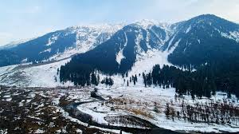
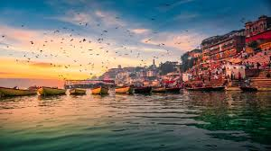
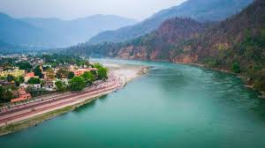
⮚ Kashmir: Known as “Paradise on Earth,” Kashmir is famous for its scenic beauty, snow-capped mountains, and houseboats on Dal Lake.
⮚ Varanasi: One of the oldest living cities in the world, Varanasi is a spiritual hub on the banks of the Ganges, known for its temples and sacred ghats.
⮚ Rishikesh: Nestled in the foothills of the Himalayas, Rishikesh is renowned as the Yoga Capital of the World and a gateway to spiritual retreats.
For more information :- Click Here
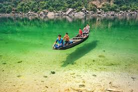
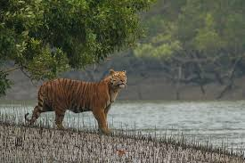
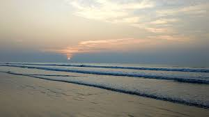
⮚ Meghalaya: Known as the "Abode of Clouds," Meghalaya is famous for its living root bridges, waterfalls, and lush green landscapes.
⮚ Sundarvans: The Sundarvans is the world's largest mangrove forest and a UNESCO World Heritage Site, home to the Royal Bengal Tiger.
⮚ Digha: Digha is a popular seaside resort town in West Bengal, known for its serene beaches and scenic sunsets.
For more information :- Click Here
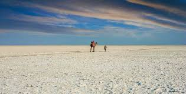
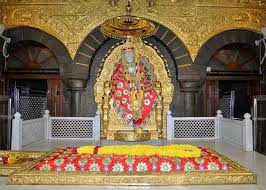
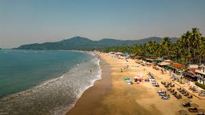
⮚ Kutch's Desert: The Rann of Kutch is a vast white salt desert in Gujarat, famous for the Rann Utsav cultural festival and its stunning moonlit landscape.
⮚ Shirdi Temple: The Shirdi Sai Baba Temple in Maharashtra is a revered pilgrimage site attracting millions of devotees from around the world.
⮚ Goa: Goa is renowned for its beautiful beaches, vibrant nightlife, and a unique blend of Indian and Portuguese culture.
For more information :- Click Here
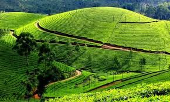
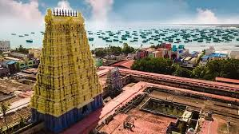
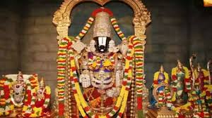
⮚ Munnar: Munnar is a picturesque hill station in Kerala, known for its rolling tea plantations, misty hills, and cool climate.
⮚ Rameswaram: Rameswaram, a sacred town in Tamil Nadu, is famous for the Ramanathaswamy Temple and its connection to the Ramayana.
⮚ Tirupati: Tirupati is home to the renowned Tirumala Venkateswara Temple, one of the most visited and richest pilgrimage sites in the world.
For more information :- Click Here
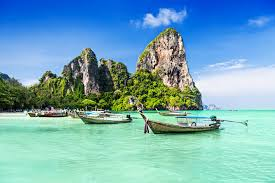
⮚ Andaman and Nicobar Islands: Located in the Bay of Bengal, the Andaman and Nicobar Islands are known for their pristine beaches, coral reefs, and historical sites like the Cellular Jail. The islands also offer rich biodiversity and are a popular destination for scuba diving and eco-tourism.
⮚ Lakshadweep: Lakshadweep is a group of beautiful coral islands in the Arabian Sea, celebrated for their crystal-clear waters and marine life. The islands are ideal for water sports like snorkeling and are known for their peaceful, untouched natural environment.
For more information :- Click Here